3 Layer Guide
This guide serves to provide greater detail about each layer included in the Tribal Water Data Map including the source of the data.
3.1 Tribal Land Layers
3.1.1 Indigenous Territories
Layer displaying historic Indigenous Territories within California.
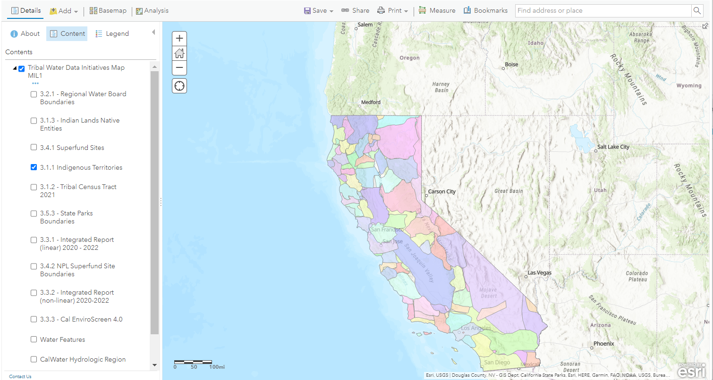
Source: native-land.ca
Frequency update: As needed
Contact: Native Land Digital
Native Land Digital strives to create and foster conversations about the history of colonialism, Indigenous ways of knowing, and settler-Indigenous relations, through educational resources such as our map and Territory Acknowledgement Guide. We strive to go beyond old ways of talking about Indigenous people and to develop a platform where Indigenous communities can represent themselves and their histories on their own terms. In doing so, Native Land Digital creates spaces where non-Indigenous people can be invited and challenged to learn more about the lands they inhabit, the history of those lands, and how to actively be part of a better future going forward together.
3.1.2 Tribal Census Tract 2021
Layer showing Tribal areas identified by the U.S. Census Bureau.
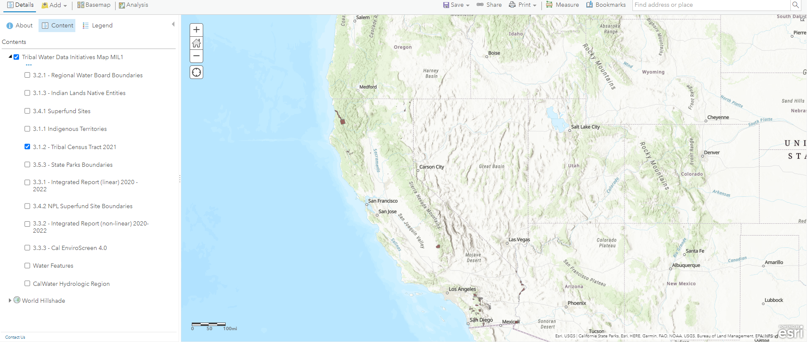
Source: U.S. Census Bureau
Frequency update: Every 10 years
Contact: U.S Census Bureau
3.1.3 Indian Lands and Native Entities
Layer showing American Indians Reservations/Federally Recognized Tribal Entities.
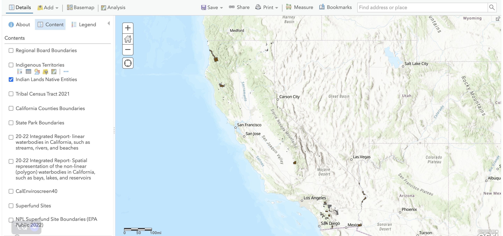
Source: California Governor’s Office of Emergency Services (Cal OES)
Frequency update: As needed
Contact: Cal OES
The American Indians Reservations/Federally Recognized Tribal Entities dataset depicts feature location, selected demographics and other associated data for the 561 Federally Recognized Tribal entities in the contiguous U.S. and Alaska. Categories included are: American Indian Reservations (AIR), Federally Recognized Tribal Entities (FRTE) and Alaska Native Villages (ANV).
The American Indian Reservations / Federally Recognized Tribal Entities dataset was compiled using USGS 7.5’ quadrangle maps (1:24,000), Bureau of Census 1995 TIGER data sets (1:100,000), Bureau of Census 2000 TIGER data sets (1:100,000),Bureau of Census 2004 TIGER data sets (1:100,000), BIA Pacific and Alaska Regional Office coverages (1:24,000 ) and the GDSC-developed Land Title Mapper (LTM) (1:24,000).
3.2 CA Water Boards Layers
3.2.1 Regional Water Board Boundaries
Layer showing the Nine Regional Water Quality Control Boards in California.
The Nine Regional Water Quality Control Boards in California, The State Water Resources Control Board has jurisdiction throughout California. Created by the State Legislature in 1967, the Board protects water quality by setting statewide policy, coordinating and supporting the Regional Water Board efforts, and reviewing petitions that contest Regional Board actions. There are nine regional water quality control boards that exercise rulemaking and regulatory activities by basins.
Region 1 -- North Coast Regional Water Quality Control Board: Del Norte, Glenn, Humboldt, Lake, Marin, Mendocino, Modoc, Siskiyou, Sonoma, and Trinity counties.
Region 2 -- San Francisco Regional Water Quality Control Board: Alameda, Contra Costa, San Francisco, Santa Clara (north of Morgan Hill), San Mateo, Marin, Sonoma, Napa, Solano counties.
Region 3 -- Central Coast Regional Water Quality Control Board: Santa Clara (south of Morgan Hill), San Mateo (southern portion), Santa Cruz, San Benito, Monterey, Kern (small portions), San Luis Obispo, Santa Barbara, Ventura (northern portion) counties.
Region 4 -- Los Angeles Regional Water Quality Control Board: Los Angeles, Ventura counties, (small portions of Kern and Santa Barbara counties).
Region 5 -- Central Valley Regional Water Quality Control Board: Modoc, Shasta, Lassen, Plumas, Butte, Glen, Colusa, Lake, Sutter, Yuba, Sierra, Nevada, Placer, Yolo, Napa, (N. East), Solano (West), Sacramento, El Dorado, Amador, Calaveras, San Joaquin, Contra Costa (East), Stanislaus, Toulumne, Merced, Mariposa, Madera, Kings, Fresno, Tulare, Kern. (Very small portions of San Benito, San Luis Obispo) counties. Fresno Office: Fresno, Kern, Kings, Madera, Mariposa, Merced, and Tulare counties. Redding Office: Butte, Glen, Lassen, Modoc, Plumas, Shasta, Siskiyou, and Tehama Counties.
Region 6 -- Lahontan Regional Water Quality Control Board: Modoc (East), Lassen (East side and Eagle Lake), Sierra, Nevada, Placer, El Dorado, Alpine, Mono, Inyo, Kern (East), San Bernardino, Los Angeles (N/E corner) counties.
Region 7 -- Colorado River Regional Water Quality Control Board: Imperial, San Bernardino, Riverside, San Diego counties.
Region 8 -- Santa Ana Regional Water Quality Control Board: Orange, Riverside, San Bernardino counties.
Region 9 -- San Diego Regional Water Quality Control Board: San Diego, Imperial, Riverside counties.
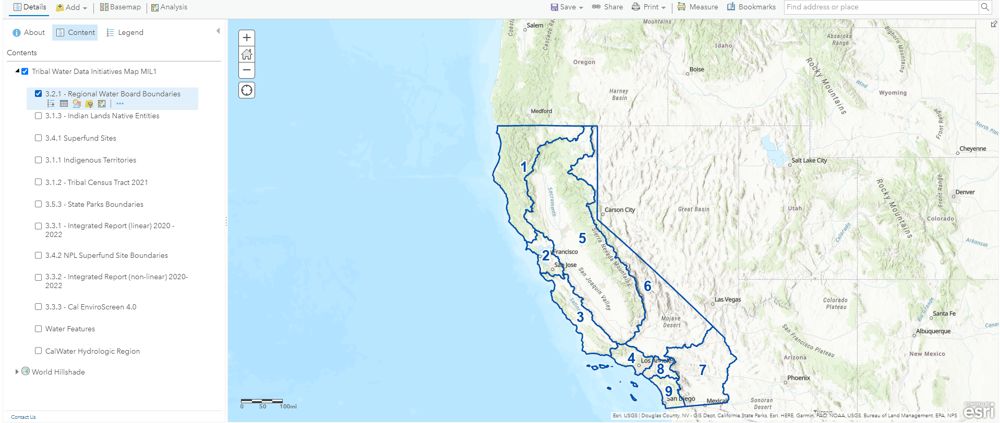
Source: California State Water Resources Control Board (SWRCB)
3.3 Environmental Data Layers
3.3.1 2020-2022 Integrated Report (linear)
This layer shows the 2020-2022 Integrated Report for linear waterbodies in California.
State Water Resources Control Board Division of Water Quality staff have developed this map to graphically display the waterbodies assessed in the 2020-2022 California Integrated Report. This map contains waterbodies assessed for 305(b) categorization, including those placed on the 303(d) list of impaired waters.
Note, these are not the final assessments.
Map Layers:
2020-22 Integrated Report Lines: Spatial representation of the assessed linear waterbodies in California, such as streams, rivers, and beaches.
2020-22 Integrated Report Polygons: Spatial representation of the non-linear (polygon) waterbodies in California, such as bays, lakes, and reservoirs.
Pop Up Description:
Waterbody ID: Unique identifier for each waterbody used in the Integrated Report.
Waterbody Name: Name of the listed waterbody.
Waterbody Type: Type of water (river, lake, etc)
Regional Board: Which Regional Water Quality Control Board has jurisdiction over the waterbody.
WB Size: Approximate size of the waterbody and the corresponding unit of measurement.
WB Category: Integrated Report Category for the waterbody.
Listing Status: If identified on the 303(d) list as impaired.
Listed Pollutants: If identified on the 303(d) list as impaired, the listing pollutant and associated Decision ID.
Fact Sheet: Link to the complete waterbody fact sheet with assessment details.
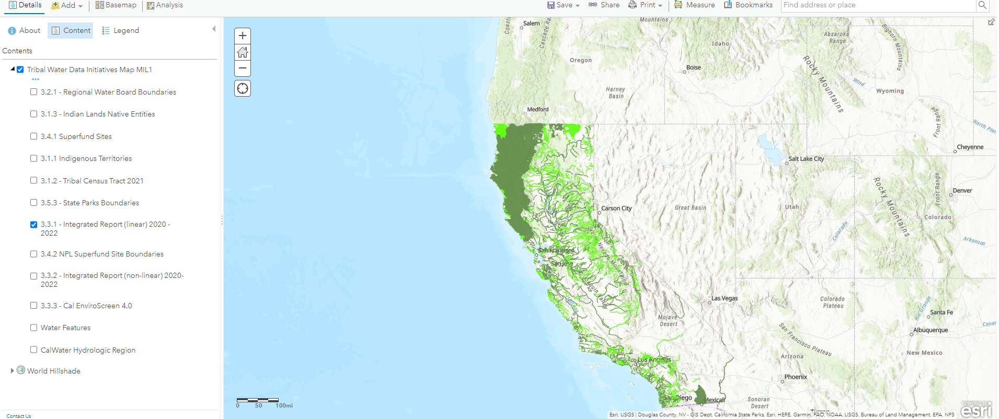
Source: California State Water Resources Control Board (SWRCB)
Frequency update: Every two years
3.3.2 Integrated Report (non-linear) 2020-2022
This layer shows a spatial representation of the 2020-2022 Integrated Report-non-linear (polygon) waterbodies in California, such as bays, lakes, and reservoirs.
State Water Resources Control Board Division of Water Quality staff have developed this map to graphically display the waterbodies assessed in the 2020-2022 California Integrated Report. This map contains waterbodies assessed for 305(b) categorization, including those placed on the 303(d) list of impaired waters.
Note, these are not the final assessments.
Map Layers:
2020-22 Integrated Report Lines: Spatial representation of the assessed linear waterbodies in California, such as streams, rivers, and beaches.
2020-22 Integrated Report Polygons: Spatial representation of the non-linear (polygon) waterbodies in California, such as bays, lakes, and reservoirs.
Pop Up Description:
Waterbody ID: Unique identifier for each waterbody used in the Integrated Report.
Waterbody Name: Name of the listed waterbody.
Waterbody Type: Type of water (river, lake, etc)
Regional Board: Which Regional Water Quality Control Board has jurisdiction over the waterbody.
WB Size: Approximate size of the waterbody and the corresponding unit of measurement.
WB Category: Integrated Report Category for the waterbody.
Listing Status: If identified on the 303(d) list as impaired.
Listed Pollutants: If identified on the 303(d) list as impaired, the listing pollutant and associated Decision ID.
Fact Sheet: Link to the complete waterbody fact sheet with assessment details.
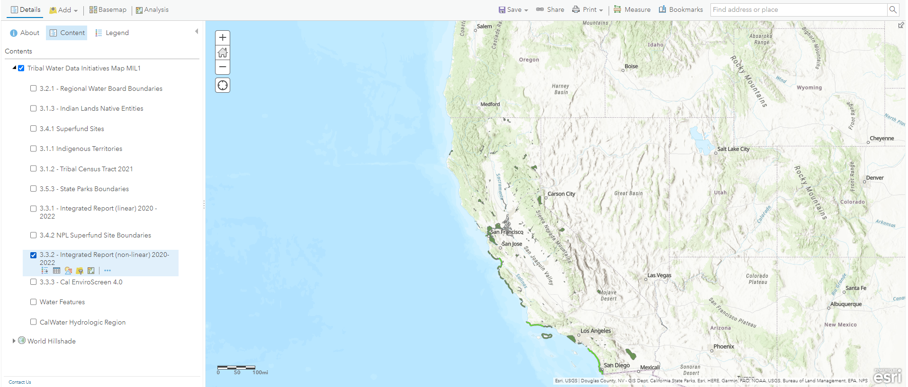
Source: California State Water Resources Control Board (SWRCB)
Frequency update: Every 2 years
3.3.3 CalEnviroScreen 4.0
This layer shows the CalEnviroScreen 4.0 based on the CL Score percentile (ClscoreP).
CalEnviroScreen is a screening methodology that can be used to help identify California communities that are disproportionately burdened by multiple sources of pollution.
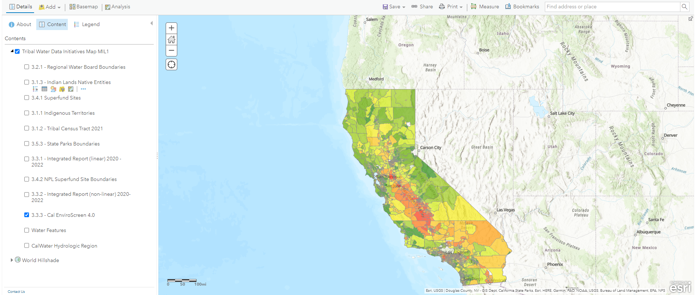
Source: California Office of Environmental Health Hazard Assessment (OEHHA)
Frequency Update: As needed
Contact: CalEnviroScreen
3.4 Environmental Justice Layers
3.4.1 Superfund Sites
This layer shows Superfund Sites from EPA’s Facility Registry Service (FRS).
This data provides location and attribute information on Facilities regulated under the Superfund Enterprise Management System (SEMS). The Superfund Enterprise Management System (SEMS) integrates multiple legacy systems (e.g., CERCLIS, ICTS, SDMS) into a comprehensive tracking and reporting tool, providing data on the inventory of active and archived hazardous waste sites evaluated by the Superfund program. It contains sites that are either proposed to be, or are on, the National Priorities List (NPL) as well as sites that are in the screening and assessment phase for possible inclusion on the NPL. The data provided in this service are obtained from EPA’s Facility Registry Service (FRS). The FRS is an integrated source of comprehensive (air, water, and waste) environmental information about facilities, sites or places. This service connects directly to the FRS database to provide this data as a feature service. FRS creates high-quality, accurate, and authoritative facility identification records through rigorous verification and management procedures that incorporate information from program national systems, state master facility records, data collected from EPA’s Central Data Exchange registrations and data management personnel.
Source: U.S. Environmental Protection Agency (EPA)
Frequency Update: As needed
3.4.2 NPL Superfund Site Boundaries
This layer shows entire Superfund Site Boundaries.
Shared Enterprise Geodata and Services (SEGS) provides an EPA-curated collection of recommended geodata assets that are nationally relevant and support the Agency’s mission to protect human health and the environment. By connecting EPA users with curated datasets and promoting service reuse, SEGS aims to enhance information access, reduce data-storage costs, and improve the consistency and quality of data at the US EPA. This GIS dataset contains polygons depicting U.S. EPA Superfund Site boundaries. Site boundaries are polygons representing the footprint of a whole site, defined for purposes of this effort as the sum of all of the Operable Units and the current understanding of the full extent of contamination. For Federal Facility sites, the total site polygon may be the Facility boundary. As site investigation and remediation progress, OUs may be added, modified or refined, and the total site polygon should be updated accordingly. Superfund features are managed by regional teams of geospatial professionals and remedial program managers (RPMs), and SEGS harvests regional data on a weekly basis to refresh the national dataset and feature services. EPA is interested in your feedback on this item and the SEGS collection. Please share any feedback to the SEGS Administrative Team at SEGServices@epa.gov.
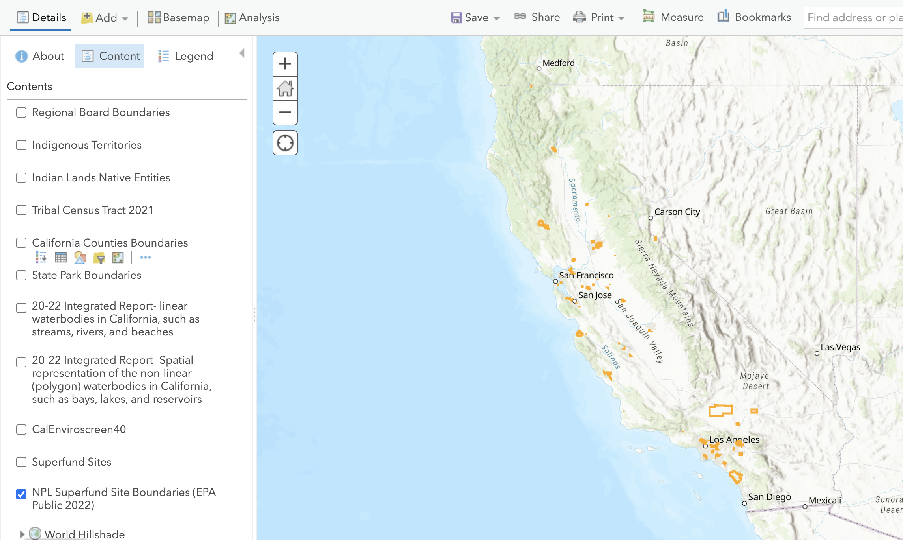
Source: U.S. Environmental Protection Agency (EPA)
Frequency update: As needed
3.5 Other Government Layers
3.5.1 Non-private Land Holders
This layer shows boundaries for all non-private land holders in California.
Non-private land holders include:
Tribal Trust Lands
Bureau of Land Management
Bureau of Reclamation
CA Dept. of Fish and Wildlife
CA Dept. of Forestry and Fire Protection
CA Dept. of Parks and Recreation
US Dept. of Defense
Local Government
National Park Service
Non-Profit Conservancies and Trusts
Other Federal Lands
Other State Lands
US Fish and Wildlife Service
USDA Forest Service
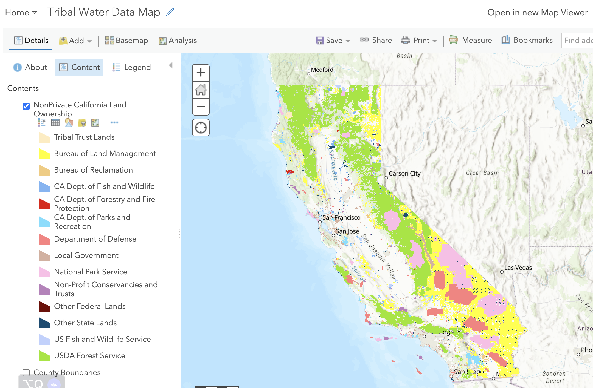
Source: California Dept. of Forestry and Fire Protection (CalFIRE)
Frequency update: As needed
3.5.2 County Boundaries
This layer shows County Boundaries within California.
This layer provides an initial offering as “best available” at 1:24,000 scale.
In late 1996, the Dept of Conservation (DOC) surveyed state and federal agencies about the county boundary coverage they used. As a result, DOC adopted the 1:24,000 (24K) scale U.S. Bureau of Reclamation (USBR) dataset (USGS source) for their Farmland Mapping and Monitoring Program (FMMP) but with several modifications. Detailed documentation of these changes is provided by FMMP and included in the lineage section of the metadata.
A dataset was made available (approximately 2004) through CALFIRE - FRAP and the California Spatial Information Library (CaSIL), with additional updates throughout subsequent years. More recently, an effort was made to improve the coastal linework by using the previous interior linework from the 24k data, but replacing the coastal linework based on NOAA’s ERMA coastal dataset (which used NAIP 2010).
In this dataset, all bays (plus bay islands and constructed features) are merged into the mainland, and coastal features (such as islands and constructed features) are not included, with the exception of the Channel Islands which ARE included.
This service represents the latest released version, and is updated when new versions are released. As of June, 2019 it represents cnty19_1.
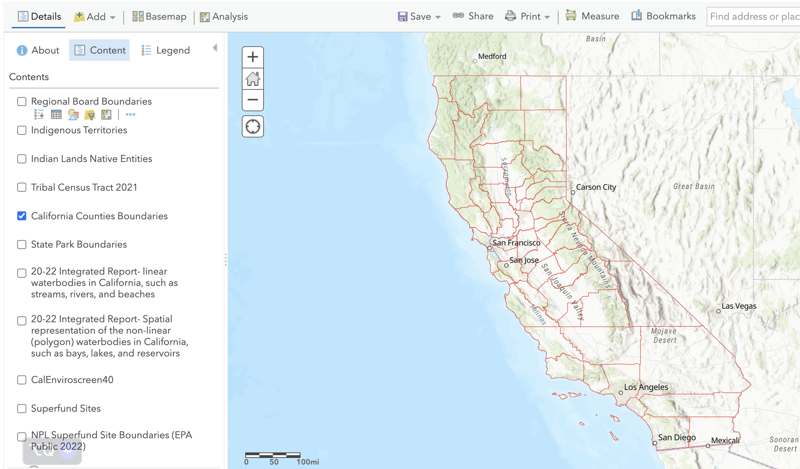
Source: California Dept. of Forestry and Fire Protection (CalFIRE)
3.5.3 State Park Boundaries
This layer shows the State Parks in California.
California State Parks generates eight GIS datasets for public use.
These datasets and materials (“Materials”) have been developed by the State of California, Department of Parks and Recreation (“DPR”) for uses beneficial to DPR and as a public service to enhance open government, transparency and accountability. DPR is also known as California State Parks (“CSP”).
All Materials are made available on an “as is” basis, on the express condition that users who view, download, transfer or otherwise access or use the Materials expressly accept these Terms of Use and Disclaimers
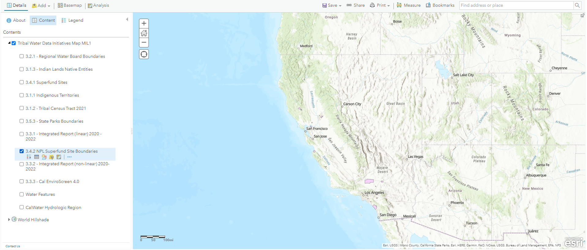